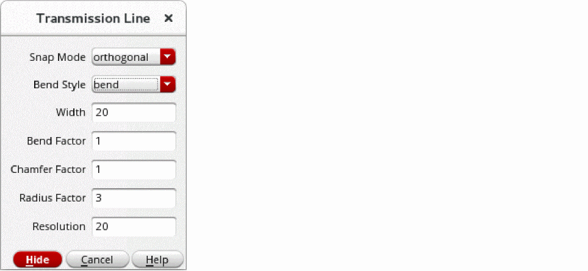
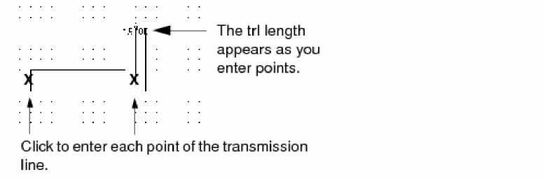
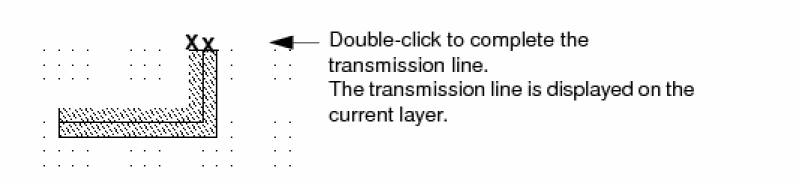

Creating Transmission Lines
You can use the Trl command to create a transmission line (trl). A transmission line shows connections in microwave designs. You create a transmission line the same way you create paths.
To create a transmission line:
- In the layout window, choose Create – Microwave – Trl.
-
Press
F3to open the Transmission Line form.
 - Set Bend Style to bend.
-
Set Bend Factor to
1. -
Set the
Widthto2. -
Click on the canvas to create each point of the transmission line.
 -
To complete the transmission line, double-click the last point.

Related Topics
Return to top